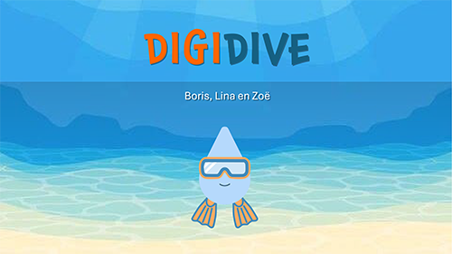
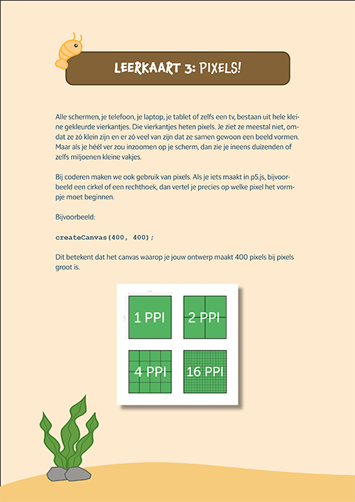
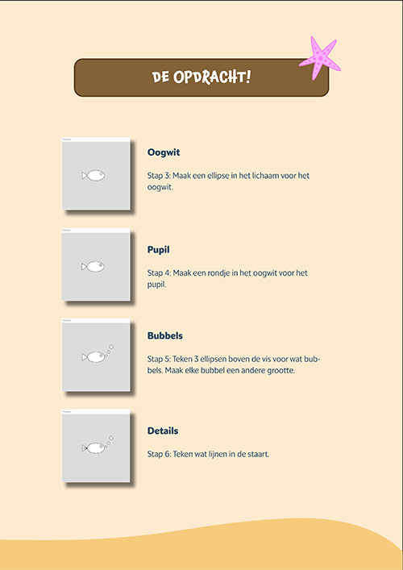

Workshop coderen voor kinderen bij het Bernardlievegoed college
Verkenning
Aan het begin van dit project hebben we onderzocht wat er nodig is om kinderen op een toegankelijke en leuke manier kennis te laten maken met coderen. We keken naar de doelgroep, het niveau en de manier waarop kinderen het beste leren. Hierbij stond vooral centraal dat het begrijpelijk, interactief en motiverend moest zijn.
Door deze verkenning kregen we inzicht in hoe we de workshop moesten vormgeven en welke middelen daarbij het beste zouden werken.

Ontwikkeling workshop
Op basis van de inzichten uit de verkenning zijn we begonnen met het ontwikkelen van de workshop. We hebben een duidelijke structuur opgezet waarin kinderen stap voor stap kennismaken met de basis van coderen. Hierbij hebben we ervoor gezorgd dat er een goede balans is tussen uitleg en zelf doen, zodat kinderen actief betrokken blijven en op hun eigen tempo kunnen leren.

Lesmateriaal
Om de workshop te ondersteunen hebben we een boekje ontwikkeld waarin alle stappen duidelijk worden uitgelegd. Dit boekje helpt de kinderen tijdens de workshop, maar kan ook daarna nog gebruikt worden om zelfstandig verder te oefenen.
Door visuele uitleg en eenvoudige stappen blijft het materiaal toegankelijk en overzichtelijk.
Ontwikkeling workshop
Naast de workshop hebben we een website ontwikkeld die gebruikt kan worden voor toekomstige workshops. Op deze website is informatie te vinden over de inhoud van de workshop en hoe deze ingezet kan worden. Hiermee hebben we niet alleen een eenmalig project gemaakt, maar ook een basis gelegd voor verdere uitbreiding.
Uitvoering
Uiteindelijk hebben we de workshop gegeven op het Bernard Lievegoed College. Tijdens deze sessie hebben de kinderen zelf ervaren hoe het is om te coderen.
Het was waardevol om te zien hoe enthousiast en betrokken zij waren. Deze uitvoering gaf ons niet alleen feedback op het concept, maar liet ook zien dat de aanpak werkt in de praktijk.
